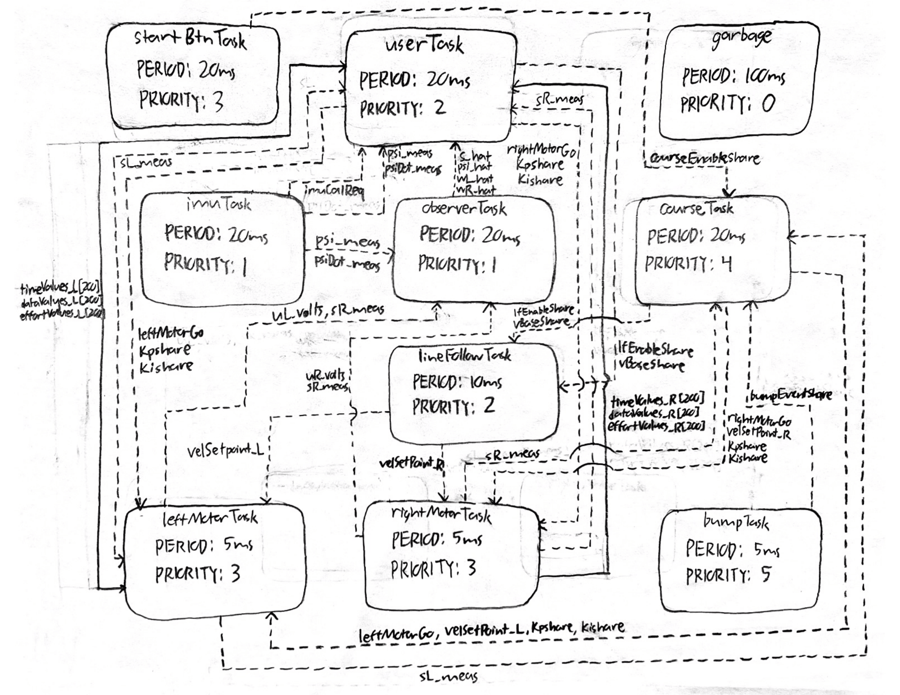
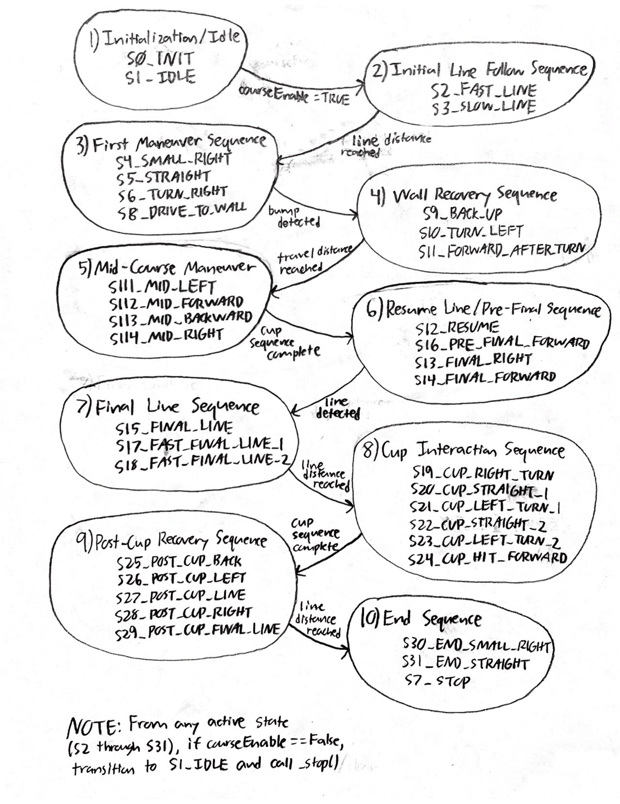

Project Overview
This project focused on the design and implementation of an autonomous Romi robot capable of completing a structured obstacle course without direct human control. The goal was not just to make the robot move, but to build a system that could sense its environment, interpret what was happening, and respond in a reliable and repeatable way.
To accomplish this, the robot combines mechanical design, embedded systems, sensor integration, and control algorithms. The final system uses a reflectance sensor array to detect and follow a printed line, wheel encoders to measure wheel motion, front-mounted bump switches to detect wall contact, and an inertial measurement unit (IMU) to measure heading and angular velocity. These measurements are combined in software using both direct feedback control and a discrete-time observer.
One of the most important parts of this project was the software structure. Rather than writing one large control loop, the robot was organized into multiple cooperating tasks. Separate tasks were used for motor control, line following, IMU processing, observer estimation, bump detection, garbage collection, and user interaction. This made the system easier to debug, easier to expand, and much closer to how a real embedded robotic system is structured.
A major theme throughout the project was balancing theory with real-world behavior. On paper, encoder counts, heading measurements, and controller equations can look straightforward. In practice, sensor noise, timing, actuator mismatch, and memory limits all affect performance. This project ended up being a strong lesson in how important integration, tuning, and iteration are when building an actual autonomous system.
Project Objectives
The main objective of this project was to develop a robot that could complete the required obstacle course autonomously while demonstrating good engineering design, not just isolated functionality. That meant the robot needed to complete multiple behaviors in sequence and transition between them in a predictable way.
Primary Functional Goals
- Detect and follow a line on the course using reflectance-based sensing
- Maintain stable and repeatable wheel motion using encoder feedback
- Execute controlled state transitions between navigation behaviors
- Detect contact with an obstacle using bump switches
- Stop or change behavior safely when a collision occurs
- Use IMU and encoder data to improve awareness of robot motion
- Support live tuning, calibration, and debugging through a serial user interface
Higher-Level Engineering Goals
- Use a modular software architecture instead of a monolithic loop
- Implement closed-loop control rather than relying only on timing
- Incorporate state estimation to go beyond raw sensor readings
- Design the system to be understandable and reproducible by another student
- Create a documented portfolio that explains not only what was built, but why it was built that way
In the end, the goal of the project was not only to produce a functioning robot, but to demonstrate a full engineering process: system design, implementation, testing, debugging, and reflection.
Romi Platform Parameters
Before implementing the final robot behaviors, it was important to understand the underlying Romi platform and the physical parameters that affect motion, sensing, and control. The Romi chassis uses a differential-drive layout, meaning motion is generated by independently controlling the two wheel speeds. Key geometric and encoder parameters directly influence distance resolution, turning behavior, and observer modeling.
| Parameter | Value |
|---|---|
| Chassis Diameter | 165 mm |
| Track Width (wheel center to wheel center) | 141 mm |
| Wheel Radius | 35 mm |
| Wheel Circumference | 219.911 mm |
| Gear Ratio | 120:1 |
| Encoder Resolution at Motor | 12 counts/rev |
| Effective Encoder Resolution | 1440 counts/rev |
| Rated Motor Voltage | 4.5 V |
| Motor Stall Torque | 25 oz-in (approximately 0.1765 N·m) |
| Motor Stall Current | 1.25 A |
| No-Load Motor Speed | 150 rpm at 4.5 V |
| Maximum Translational Speed | 0.55 m/s |
| Theoretical Max Speed (6×AA NiMH, 7.2 V) | 0.88 m/s |
| Theoretical Max Speed (6×AA Alkaline, 9.0 V) | 1.10 m/s |
| Alkaline vs NiMH Speed Increase | 25% |
These values were especially useful for estimating encoder distance resolution, expected robot speed, and the scale of the physical model used in the observer.
Why These Parameters Matter
Because each wheel revolution corresponds to 1440 encoder counts and the wheel circumference is about 0.2199 m, the robot can theoretically resolve straight-line travel on the order of 0.153 mm per encoder count. This gave the control and estimation software a solid measurement foundation, provided wheel slip remained limited.
The Romi is also nonholonomic, meaning it cannot move sideways directly. Instead, all path changes must be generated by the relative speeds of the two wheels. That made wheel-speed regulation, heading estimation, and line-sensor feedback especially important in practice.
Build Guide
This section provides a step-by-step guide for assembling the Romi robot, including mechanical structure, electronics integration, and sensor installation. We wanted the build sequence to be straightforward enough that another student could follow it without having to undo major steps later.
1. Gather Materials and Tools
Before beginning assembly, verify that all required hardware components, cables, and tools are available. This includes standoffs, screws, the Romi chassis, Nucleo board, Shoe of Brian, IMU, and pre-crimped jumper wires. Having all components ready prevents interruptions during assembly.
2. Install Chassis Standoffs
Attach four 30 mm standoffs to the Romi chassis using nylon lock nuts. These standoffs form the vertical support for the electronics stack. Ensure they are aligned properly in the mounting slots and do not overtighten, as the plastic chassis can be damaged.
3. Prepare and Route Cables
Create and organize the required cable assemblies, including power, motor, and encoder cables. Follow proper color conventions and confirm pin orientations before connecting anything. Route the cables through the center of the chassis to simplify later connections.
4. Install Adapter Plate
Mount the Romi-to-Shoe adapter plate onto the standoffs using M2.5 screws. Feed motor and encoder wires through the center cutout to keep wiring clean and organized.
5. Mount Shoe of Brian and Nucleo
Install four 8 mm standoffs onto the adapter plate, then attach the Shoe of Brian using screws and nylon washers. Afterward, carefully mount the Nucleo L476RG onto the Shoe of Brian, ensuring proper alignment of the header pins.
6. Connect Power and Signals
Connect all cables from the Romi power distribution board to the Nucleo. This includes power, motor control signals, and encoder inputs. We treated this as one of the most important steps in the whole build because incorrect connections could damage the microcontroller immediately.
7. Install IMU
Mount the BNO055 IMU using standoffs and screws on the Romi chassis. Position it to avoid interference with other components and ensure stable orientation for accurate heading and angular velocity measurements.
8. Install Line Sensor
Mount the Pololu QTRX-A reflectance sensor array at the front of the robot using four 1/4" 2-56 MF standoffs, 2-56 screws, and nuts. This sensor detects the line by measuring reflected infrared light and enables real-time steering corrections.
9. Install Bump Sensors
Mount two snap-action bump switches with 18.5 mm lever arms at the front of the robot, positioned in front of the line sensor. These were secured using hot glue to the frame, which ended up being a simple and effective method for detecting wall contact during the obstacle course.
10. Final Checks
- Verify all wiring connections and polarity
- Ensure no loose cables interfere with wheels
- Confirm sensors are securely mounted
- Only power on the system after all checks are complete
Following this build sequence helped keep the robot assembly organized and made later debugging much easier.
Wiring Diagram and Pin Layout
Because this project integrated motors, encoders, line sensors, bump switches, and an IMU onto a single microcontroller, documenting the wiring clearly was an important part of the final package. A full wiring diagram was created so the robot could be debugged, understood, and reproduced more easily by another student or team.
Wiring Diagram
The full wiring diagram for the Romi robot electrical system is shown below.

Figure 1. Full wiring diagram showing MCU, motor, encoder, IMU, line sensor, and bump switch connections.
Pin Layout Table
The table below summarizes the main electrical connections used in the final robot system based on the final wiring layout.
| Subsystem | Signal / Wire | Nucleo Pin | Notes |
|---|---|---|---|
| Romi PDB | GND (black) | GND | Common ground connection |
| Romi PDB | VSW (red) | Vin | Battery / switched supply path |
| Left Encoder | ELA (blue) | PA_8, PWM1/1 | Timer encoder input |
| Left Encoder | ELB (yellow) | PA_9, PWM1/2 | Timer encoder input |
| Right Encoder | ERA (blue) | PA_0, PWM2/1 | Timer encoder input |
| Right Encoder | ERB (yellow) | PA_1, PWM2/2 | Timer encoder input |
| Left Motor | PWM (green) | PB_1 | Motor PWM command |
| Left Motor | DIR (yellow) | PB_15 | Direction control |
| Left Motor | SLP (blue) | PB_14 | Sleep / enable control |
| Right Motor | PWM (green) | PB_0 | Motor PWM command |
| Right Motor | DIR (blue) | PB_5 | Direction control |
| Right Motor | SLP (yellow) | PB_4 | Sleep / enable control |
| IMU | 3.3V (red) | 3V3 | Power |
| IMU | GND (black) | GND | Ground |
| IMU | Grey | PB9 | I2C line |
| IMU | Purple | PB8 | I2C line |
| IMU | White | PC9 | Optional / auxiliary line |
| Bump Sensor (right) | COM | GND | Common terminal |
| Bump Sensor (right) | NO | PB7 | Normally open input |
| Bump Sensor (left) | COM | GND | Common terminal |
| Bump Sensor (left) | NO | PB2 | Normally open input |
Line Sensor Pin Mapping
| Line Sensor Signal | Nucleo Pin |
|---|---|
| GND | GND (CN7) |
| VCC | 3V3 (CN6) |
| CTRL | PC10 |
| 1 | PC0 |
| 3 | PC1 |
| 5 | PA5 |
| 7 | PA6 |
| 9 | PA7 |
| 11 | PC2 |
| 13 | PC5 |
| 15 | PC4 |
This table was included so that the physical robot and its software pin assignments can be cross-referenced more easily during debugging and future reproduction.
Mechanical & Electrical Design
Mechanical Design Overview
The robot is built on the Romi differential-drive chassis, which uses two independently driven wheels and a passive rear support. This configuration is simple, compact, and especially well suited for line-following and small navigation tasks because translational and rotational motion can be controlled through the relative wheel speeds.
The mechanical design of this project was driven less by large custom structures and more by thoughtful sensor placement. Since the robot depends heavily on what it can sense, where the sensors are mounted has a direct effect on performance. The line sensor array, bump switches, and IMU were all positioned with a specific purpose in mind.
Line Sensor Placement
The primary line-detection hardware is a Pololu QTRX-A reflectance sensor array mounted underneath the front portion of the robot. This array was placed forward of the wheel axis so the robot can “see” the line before the center of the chassis passes over it. That matters because it gives the controller more time to react. If the line sensor were directly under the center of the robot, the steering correction would happen later and the robot would be more likely to overshoot or oscillate.
Keeping the array low and level relative to the course surface was also important. Reflectance sensors are sensitive to height, so any tilt or uneven mounting can change the magnitude of the readings. A stable mounting position helps the calibration stay meaningful and improves consistency from run to run.
Bump Sensor Placement
The robot uses two Pololu snap-action switches with bump levers mounted at the front of the chassis. These act as physical contact sensors. The reason this was a good choice for the obstacle portion of the course is that the required behavior was based on actual impact with a wall, not simply detecting something nearby. A mechanical switch provides a clear and unambiguous signal: either contact happened or it did not.
The front-facing placement also increases reliability. Since both switches are near the forward edge of the robot, wall contact is detected immediately when the robot reaches the obstacle. Using two switches also improves robustness in cases where the robot approaches slightly off-center.
IMU Placement
The BNO055 IMU was mounted near the center of the robot. This location was chosen to reduce the effect of rotational offset and vibration on the measured signals. Since the IMU is used to estimate heading and yaw rate, placing it near the center of rotation makes those readings more representative of the robot as a whole.
Although the line sensors and encoders do most of the direct navigation work, the IMU adds another layer of information about how the robot is moving. That made it valuable not only for real-time use, but also for debugging and analyzing the robot’s dynamic behavior during turns.
Sensors Used
- Pololu QTRX-A reflectance sensor array: used for line detection by measuring changes in reflected infrared light
- Snap-action bump switches: used for wall and collision detection through direct physical contact
- Wheel encoders: used for position and velocity feedback from each motor
- BNO055 IMU: used to measure heading and yaw rate
Electrical Design
The electrical system is centered around an STM32 microcontroller running MicroPython. The microcontroller interfaces with several kinds of hardware at once, each with different signal requirements.
- PWM outputs are used to command the motor drivers
- Encoder timer inputs are used to measure wheel rotation
- ADC inputs are used to read the analog reflectance sensors
- I2C communication is used for the BNO055 IMU
- Digital inputs with pull-ups are used for the bump switches
The bump switches are configured so that they normally read HIGH and transition to LOW when pressed. This makes them easy to handle in software because the code can detect the falling edge and immediately trigger a stop condition. The line sensor emitter is also controlled directly in software, which allows the system to manage the reflectance readings in a more controlled way.
Overall, the electrical design was aimed at reliability and clarity. A robot like this is only as good as its sensing and actuation pathways, so making sure the hardware connections were stable and logically organized was just as important as the code itself. As part of the final documentation package, we also created a full wiring diagram for the robot so that the system could be more easily understood, debugged, and reproduced by another student or project team.
For reproducibility, the repository includes the source code, the portfolio site, documentation pages, the wiring diagram, calibration files, and supporting media. Our project did not rely on large custom-manufactured parts, but we did document the mounting approach, sensor placement, hardware stackup, and wiring so that the robot could be rebuilt with standard hardware and the same electrical layout.

Figure 2. Fully assembled Romi robot showing the final integrated hardware layout.
Representative Plots and Tuning Results
In addition to the final demonstration, we included a few representative plots from testing and tuning. These helped us understand how the robot was behaving in real time and allowed us to make more informed adjustments instead of relying on trial-and-error.
Line-Follow Centroid Behavior
This plot shows the weighted centroid signal used by the line-follow controller over time. The centroid represents where the robot “thinks” the line is relative to its center. When the values stay near the desired range, the robot is tracking the line well. Larger deviations indicate moments where the robot drifted, encountered curvature, or had to correct its path. This plot was especially useful for tuning base speed and controller gains while also revealing how much noise was present in the sensor readings.

Figure 3. Line-follow centroid over time during a representative run.
State Estimator Path Reconstruction
This plot shows the estimated x-y trajectory of the robot based on the state estimator. Instead of just reacting to sensor inputs, the robot continuously estimated its position using encoder and IMU data. The shape of the path gives a visual sense of how the robot moved through the course and whether the estimator was producing reasonable results. While some drift is expected without absolute position feedback, the overall motion trends helped validate the observer design.

Figure 4. Estimated x-y path reconstructed from the state estimator.
Motor Velocity Step Response
This plot shows the closed-loop response of the motor velocity controller to a step input. It was used to tune the PI controller gains by observing overshoot, settling time, and steady-state behavior. A well-tuned response reaches the desired speed quickly without excessive oscillation. This confirmed that the motor control was operating in closed-loop and that improvements were based on measured system performance rather than guesswork.

Figure 5. Closed-loop motor step response used for PI tuning.
Software Implementation
Architecture and Scheduling
The software is organized as a cooperative multitasking system. Instead of trying to run everything inside one giant while loop, the project uses individual tasks that are scheduled periodically. This makes the overall system much easier to reason about and debug, because each task has a clear purpose and a bounded responsibility.
The scheduling infrastructure is based on generator-style tasks that yield control back to the scheduler after each run. The task framework also supports task priorities, timing periods, and profiling. In the final system, the bump task runs at the highest priority and a 5 ms period, the motor tasks also run every 5 ms, the line-follow task runs every 10 ms, and the IMU, observer, and user interface tasks run every 20 ms. Garbage collection runs in the background on a slower 100 ms schedule.
Shared Variables and Queues
Because the system is split into multiple tasks, data has to move safely between them. That is handled through Shares and Queues. Shares are used for single live values such as motor enable flags, velocity setpoints, measured states, and estimated observer states. Queues are used for buffered logging and time histories. This makes the communication between tasks organized and much safer than directly letting multiple pieces of code overwrite each other’s variables.
Main Program Structure
The main program initializes the motor drivers, encoder timers, line sensor array, IMU, serial interface, Shares, and Queues. It then creates the major tasks and adds them to the scheduler. In practical terms, the main file acts like the system integration layer: it does not contain all the control logic itself, but it instantiates all of the modules that together make the robot operate.
Motor Control
Each motor is controlled by its own task. The motor task uses encoder feedback and PI control to regulate wheel motion. It also computes and publishes useful values for other parts of the system, including motor input voltage and wheel displacement in meters. One especially useful implementation detail is that encoder updates continue even when the motor is not actively commanded to move, so the observer still has current displacement information available.
The PI control approach works by comparing the desired wheel velocity to the measured velocity and then using proportional and integral action to reduce the error. This helps the robot maintain more consistent motion even when the motors are imperfect or the battery voltage varies.
Line Following
The line-following algorithm uses a centroid-based method. The sensor array readings are normalized, and the system computes the effective line position across the width of the sensor array. That position becomes the error signal for the line-follow controller.
The line-follow task uses proportional, integral, and derivative terms to compute a steering correction. The controller then modifies the left and right wheel velocity commands relative to a base speed. In other words, the robot does not simply “turn left” or “turn right” in a binary way; it continuously adjusts its wheel commands to stay centered on the line. The implementation also includes smoothing, deadband behavior, and logic for weak line signals so that the robot does not instantly spin when the line becomes temporarily unclear.
IMU Task
The IMU task is responsible for reading heading and yaw rate from the BNO055 and publishing those values for use elsewhere in the system. One subtle but important part of this implementation is that heading is unwrapped. Since headings naturally jump from 359 degrees back to 0 degrees, using the raw wrapped angle can create artificial discontinuities. The IMU task avoids that problem by maintaining a continuous representation of heading.
The IMU task also supports a non-blocking calibration flow. Through the user interface, the system can request calibration, attempt to load saved calibration values, wait for sufficient sensor calibration, and then save the updated calibration to a file. This made the robot much more practical to operate and re-use between runs. The task also includes filtering and spike rejection to keep unrealistic yaw-rate values from corrupting the measurements.
Observer and State Estimation
One of the strongest parts of this project is the observer-based state estimation. Instead of relying purely on raw measurements, the robot uses an observer task that combines motor inputs, encoder-based displacement measurements, and IMU data to estimate the internal state of the system.
The estimated states include:
- Forward position,
s - Heading,
ψ - Left wheel speed,
ωL - Right wheel speed,
ωR
The observer runs at 20 ms and uses matrices defined in observer_matrices.py. The uploaded matrices show a discrete-time model with a sample time of 0.02 s and a 4-state formulation. The file comments also show the physical parameters used in the model, including wheel radius and wheelbase-related terms. That means this is not just a conceptual observer; it is grounded in the physical robot model.
From a portfolio standpoint, this matters a lot because it shows that the project goes beyond basic line following. The robot is not just reacting directly to sensor values; it is estimating its motion using a state-space framework. That is a much more advanced approach and demonstrates a strong connection between lecture theory and real implementation.
Bump Detection and Safety Behavior
The bump task continuously monitors the two front switches. It uses edge detection to identify a new press event, and when either bump switch transitions from unpressed to pressed, the task immediately disables both motors and disables line following. This was a good design choice because it made the collision response decisive and easy to understand. Rather than letting multiple tasks argue over what to do after impact, the bump task forces the system into a safe state as soon as contact is detected.
User Interface and Debugging Tools
The user interface task is another major strength of the project. Through the serial interface, the user can print the help menu, update gains, set the line-follow base speed, calibrate the line sensors on white and black surfaces, print sensor data, start line following, stop the system, trigger IMU calibration, save calibration data, and inspect observer values. This made testing and debugging much more efficient, because it removed the need to constantly hard-code parameters during development.
Reflection on the Software
One of the biggest lessons from the software side of this project was how much easier it is to manage a complicated robot when the code is modular. At first, it is tempting to write everything in one place because it feels faster. But once multiple sensors and behaviors are involved, that approach becomes hard to maintain very quickly. Splitting the system into tasks made the code cleaner, but more importantly, it made the robot easier to understand during debugging.
We also found that the hardest part of the project was not getting one subsystem to work by itself. The hardest part was getting everything to work together consistently on the actual robot. A lot of what looked straightforward in theory still needed tuning, testing, and a lot of iteration once the whole system was running at the same time.
Click to view a simplified software flow
Line Sensor → task_line.py → velocity commands → task_motor.py → motor driver → wheels
Encoders + IMU → task_observer.py → estimated state variables
Bump switches → task_bump.py → stop condition and safety response
Code Architecture and File-by-File Implementation
One of the biggest goals of this project was to keep the software organized in a way that made the robot easier to test, debug, and improve over time. Instead of writing one large script that handled everything at once, the code was broken into multiple files with clearly defined roles. This made the system much more manageable, especially once the project grew to include line sensing, motor control, bump detection, IMU processing, observer estimation, logging, and a user interface.
At a high level, the software is built around a cooperative multitasking architecture. The main.py file initializes the hardware, creates the task objects, allocates shared variables and queues, and registers everything with the scheduler. Each task then runs periodically and focuses on one specific job, such as controlling a motor, reading the IMU, following the line, or handling bump events. This structure made the project feel much more like a real embedded robotic system rather than a collection of disconnected lab scripts.
Main Integration File
main.py
The main file is the center of the entire project. It initializes the PWM timer for the motors, configures two encoder timers, creates the line sensor array, starts I2C communication for the BNO055 IMU, and sets up a shared UART channel for estimator streaming. It also creates all of the Shares and Queues used by the tasks, including motor enable flags, line-follow setpoints, observer values, IMU values, and logging buffers. After that, it instantiates the task objects and adds them to the scheduler. In other words, main.py is the system integration layer that ties the whole robot together.
Task Files
The task files are the heart of the robot behavior. Each one is responsible for a specific subsystem and is designed to run repeatedly under the cooperative scheduler.
task_motor.py
This file implements the motor-control task for each wheel. It combines encoder updates with PI velocity control and also publishes useful observer signals such as motor input voltage and wheel displacement in meters. One especially good design choice in this file is that encoder position continues to update even when the motor is not actively being commanded to run. That means the observer can still track wheel displacement if the robot is moved by hand or if the control state changes. Overall, this file handles the low-level closed-loop actuation that makes the rest of the robot possible.
task_line.py
This file contains the line-following outer-loop controller. It uses a centroid-based line detection method and writes left and right velocity setpoints whenever line following is enabled. The task uses proportional, integral, and derivative terms and includes several practical improvements for weak line signals, such as a smaller denominator floor, realistic confidence thresholds, and logic to hold the last valid position when the line signal becomes poor instead of immediately commanding an aggressive spin.
task_imu.py
This file is responsible for acquiring and conditioning the IMU measurements. It reads heading and yaw rate from the BNO055, converts values into useful forms, and publishes them to Shares for use by the rest of the system. Its most important features include heading unwrapping, filtering, spike rejection, calibration loading, and calibration saving.
task_observer.py
This file implements the observer task. It takes in motor voltages, measured wheel displacements, heading, and yaw rate, and uses a discrete-time state-space model to estimate the robot state. This is one of the strongest technical features of the entire project because it connects the final implementation directly to controls theory and state estimation.
task_bump.py
This file handles collision detection using the left and right snap-action bump switches. It uses edge detection to identify a new press event and immediately disables the motors and line-following mode when contact occurs.
task_user.py
This file implements the serial user interface. It allows real-time parameter tuning, sensor calibration, command entry, and observer inspection, which made debugging and iteration much faster.
task_log_est.py
This file logs observer estimates over time and computes x-y dead-reckoned position for analysis. It is especially useful for validating the observer and examining robot motion outside the live demo.
task_garbage.py
This file periodically runs garbage collection in the background. Even though it is simple, it plays a practical role by helping manage memory on the microcontroller.
Hardware Interface and Driver Classes
motor_driver.py
This file defines the motor driver class and abstracts the PWM, direction, and enable logic used to command the motors.
encoder.py
This file defines the encoder class used to read cumulative wheel position and velocity. It also handles timer overflow and timing calculations.
line_sensor.py
This file defines the LineSensorArray class. It manages ADC reads, emitter control, oversampling, ambient cancellation, and white/black calibration for the Pololu line sensor array.
driver.py
This file contains the low-level BNO055 IMU driver. It handles I2C communication, chip identification, mode setting, raw sensor reads, and calibration data handling.
Task Infrastructure Files
task_share.py
This file provides the shared-data infrastructure used throughout the project. It defines Shares and Queues, which are essential for clean communication between the tasks.
cotask.py
This file implements the cooperative scheduler itself. It defines the task objects, run timing behavior, priorities, and profiling support that make the multitasking system possible.
Modeling and Observer Support Files
observer_matrices.py
This file stores the discrete-time observer matrices used by the observer task. It directly represents the mathematical model of the robot.
Startup and Support Files
boot.py
This file is the standard MicroPython boot file. It is mostly a support file, but it still forms part of the full software package.
How the Files Work Together
The hardware interface classes provide access to the motors, encoders, line sensors, and IMU. The task infrastructure files provide the scheduler and communication tools. The task files sit on top of those layers and implement the actual robot behavior: reading sensors, estimating states, controlling motion, detecting events, and responding to user commands. Finally, the support files such as the observer matrix file and boot file complete the overall software package.
Click to expand a quick breakdown of key variables and data flow
- goFlag / MotorGo Shares: enable or disable motor motion
- vRef / velocity setpoint Shares: desired motor speeds sent by high-level control
- psi and psiDot Shares: IMU heading and yaw-rate measurements
- s_hat, psi_hat, wL_hat, wR_hat: observer-estimated robot states
- Queues: used for logging and buffered data transfer
Detailed Code Documentation
The files below link to dedicated documentation pages for each source file. Each documentation page explains the file’s role in the project, important classes or tasks, key variables, and how that file interacts with the rest of the software system. A second link is also provided to open the original source code directly. CLICK ON THE BLUE BUBBLES THEMSELVES TO OPEN EACH SPECIFIC PAGE. EX: Click on main.py bubble
Main and Task Files
- main.py – Initializes hardware, shared variables, queues, and the task scheduler for the full robot system. [Open raw file]
- task_course.py – Implements the high-level finite state machine for the full obstacle course sequence. [Open raw file]
- task_motor.py – Controls each motor using encoder feedback and PI velocity regulation. [Open raw file]
- task_line.py – Performs centroid-based line sensing and generates steering-related speed commands. [Open raw file]
- task_imu.py – Reads, filters, and calibrates IMU heading and yaw-rate data. [Open raw file]
- task_observer.py – Runs the discrete-time state observer and publishes estimated robot states. [Open raw file]
- task_bump.py – Detects collision events and forces a stop response when the bump switches are triggered. [Open raw file]
- task_start_button.py – Handles debounced pushbutton input to start or stop the course. [Open raw file]
- task_user.py – Provides the serial user interface and runtime command interaction. [Open raw file]
- task_user_cmds.py – Contains helper command logic used by the serial interface. [Open raw file]
- task_log_est.py – Logs observer estimates and computes dead-reckoned position for analysis. [Open raw file]
- task_garbage.py – Runs background garbage collection to help manage MicroPython memory usage. [Open raw file]
- debug_motor.py – Standalone debugging script for validating motor task behavior. [Open raw file]
- test_motor.py – Direct motor test script for checking motor driver operation outside the full system. [Open raw file]
Driver, Utility, and Support Files
- line_sensor.py – Defines the line sensor array class, including ADC reads, emitter control, and calibration support. [Open raw file]
- motor_driver.py – Implements the motor driver abstraction for PWM, direction, and enable control. [Open raw file]
- encoder.py – Implements encoder counting, wraparound handling, and velocity estimation. [Open raw file]
- driver.py – Low-level BNO055 IMU driver for I2C communication and calibration data handling. [Open raw file]
- task_share.py – Defines the Share and Queue classes used for communication between cooperative tasks. [Open raw file]
- cotask.py – Implements the cooperative task scheduler and task timing framework. [Open raw file]
- observer_matrices.py – Stores the discrete-time observer matrices used by the estimator. [Open raw file]
- boot.py – Standard MicroPython boot file included as part of the final software package. [Open raw file]
- line_calib.json – Stores white and black calibration values for the line sensor array. [Open raw file]
System Diagrams and Additional Analysis
Some of the most important parts of the project do not fit naturally inside a single source file, so this section is meant to highlight the system-level pieces that connect everything together. This includes the overall task structure and the high-level sequence of course behaviors.
High-Level Task Interaction Diagram
A task interaction diagram is useful because it shows how the major software modules communicate through Shares and Queues. This helps explain how the line-following, motor-control, IMU, observer, bump, and user-interface tasks are related at the system level instead of only as individual files.

Figure 6. High-level task diagram showing communication between the major software modules.
Course State Machine
The obstacle course behavior was implemented as a sequence of states rather than one continuous block of control logic. A state transition diagram makes it easier to explain how the robot moves between line following, straight driving, turning, bump detection, and restart behavior.

Figure 7. High-level state transition diagram for the course logic. Related states are grouped into phases.
Why These Diagrams Matter
One thing we realized during the project is that code alone does not always communicate the full design very well. The diagrams help bridge the gap between the implementation and the bigger system-level thinking behind it. They also make the project easier for someone else to understand quickly, especially if they want to rebuild or extend it later.
Analysis and Results
Overall Performance
By the final stages of the project, the robot was able to demonstrate stable line following, reliable bump detection, and a well-structured software workflow for tuning and testing. The system showed that the mechanical, electrical, and software components were working together as an integrated whole rather than as isolated parts.
Line Following Behavior
The line-following performance improved significantly once the sensor calibration and control gains were tuned. The centroid-based method gave the robot much smoother behavior than a simple threshold-based approach would have. Instead of abruptly reacting to a single sensor crossing a threshold, the robot could respond continuously based on where the line was located relative to the array.
Another important improvement came from the weak-signal handling logic. Real line sensors are never perfectly clean, and there were times when the line signal became less distinct. The code’s decision to hold the last valid line position when the signal confidence dropped helped avoid sudden, unrealistic spins and made the line-follow behavior much more stable.
Motor and Motion Performance
The encoder-based PI motor control improved repeatability by reducing the dependence on open-loop timing. Without feedback, even small changes in battery level or friction would have changed the robot’s motion noticeably. With feedback, the robot could regulate its wheel behavior more consistently, which was especially useful when transitioning between behaviors or trying to maintain stable line-follow speed.
Observer Performance
The observer added real value to the project because it gave a cleaner and more structured estimate of the robot’s motion than raw measurements alone. Even when not used to fully close the loop on every behavior, it provided strong visibility into what the robot was doing internally. That made it useful both as a control-related feature and as a diagnostic tool.
More importantly, implementing the observer showed that the project moved beyond surface-level autonomy. It connected the robot to formal modeling concepts from class and demonstrated that the system could estimate position, heading, and wheel speeds using a state-space framework.
Challenges Encountered
- Sensor calibration: reflectance sensors were sensitive to mounting height and surface conditions
- Controller tuning: gains needed to be balanced between responsiveness and stability
- Heading management: IMU angle wrapping and noise had to be handled carefully
- Memory constraints: as more tasks and features were added, efficient use of memory became more important
- System integration: combining many working subsystems into one reliable robot was harder than getting any one subsystem working by itself
Lessons Learned
Probably the most valuable lesson from this project was that successful robotics work is mostly about integration. It is one thing to make a line sensor work on the bench or to make an encoder report counts correctly. It is another thing to combine all of those pieces into a robot that behaves predictably in real time.
This project also reinforced how important testing and iteration are. A lot of the final performance came from repeatedly running the system, observing what went wrong, and refining both the hardware setup and the software logic. In that sense, the final robot reflects not just the first design idea, but the full debugging and refinement process behind it.
Future Improvements
- Use the observer estimates more directly in the control loop
- Use IMU feedback more aggressively for heading correction during turns
- Add more logging and visualization of state estimates versus measured values
- Further refine the sensor mounting to improve repeatability
- Retune the observer poles for faster convergence, as noted in the observer matrix comments
Photos and Figures
This section provides visual documentation of the completed robot hardware. These images show the final integrated build, sensor placement, and assembly details that support the written design discussion.
Included Visual Documentation
- Full assembled robot
- Underside view showing line sensor placement
- Front view showing bump switches
- Additional hardware view of the completed assembly
Figure 8. Overall view of the fully assembled Romi robot.

Figure 9. Underside view showing the line sensor mounting location.

Figure 10. Front hardware view showing bump-switch placement.

Figure 11. Additional hardware view of the completed robot assembly.
Demonstration Video
A demonstration video is included here to show the robot operating at its best level of performance. The video demonstrates line following, obstacle interaction, and the full autonomous behavior sequence.
Or, open it directly:
Watch the Demonstration VideoProject Repository
The full project repository contains the source code, supporting documentation, and design materials used in this project. The goal of the repository is not just to store code, but to make the full engineering process understandable and reproducible. Someone looking through the repository should be able to follow how the robot was built, how the software is organized, and how the system was tested and demonstrated.
In addition to the Python source files, the repository includes the portfolio website, documentation pages, wiring information, calibration files, images, and supporting material used to explain the project. Because the robot mainly uses standard hardware and direct mounting methods rather than large custom manufactured parts, the emphasis was placed on clearly documenting the mounting approach, sensor locations, electrical connections, and software structure.
Key Files
Key Detailed Documentation Pages
These are just a few of the main documentation pages. For a more complete breakdown of every file, use the Detailed Code Documentation section above.
Repository Link
Open Full GitHub RepositoryReproducibility
To make the project reproducible, the repository includes the portfolio website, documentation pages, source code, figures, calibration files, and supporting robot software files needed to understand the full system design and implementation. Our intention was that another student could use the repository not only to read about the project, but also to understand how to rebuild the robot and how the software pieces work together.
External Reference
For external reference related to the project and course support, the following contact is included:
- Charlie Refvem – crefvem@calpoly.edu